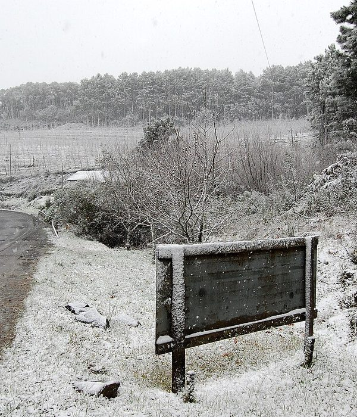
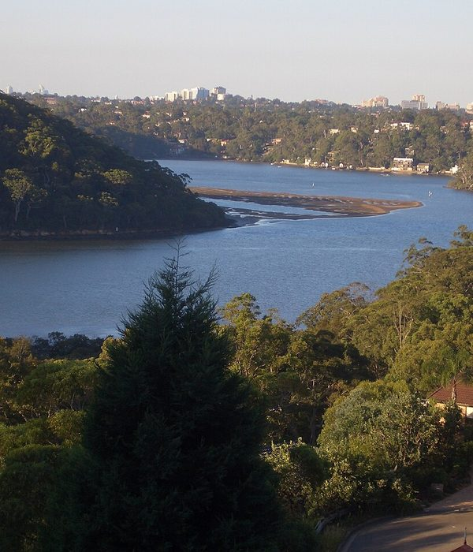
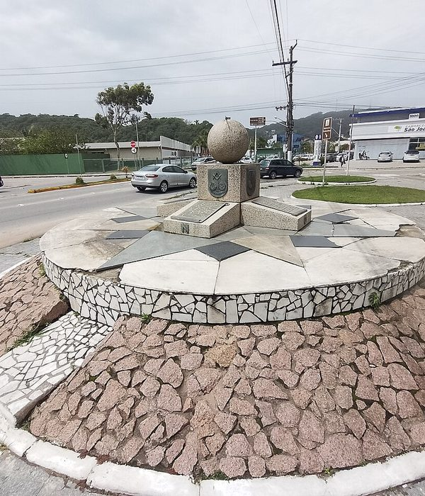
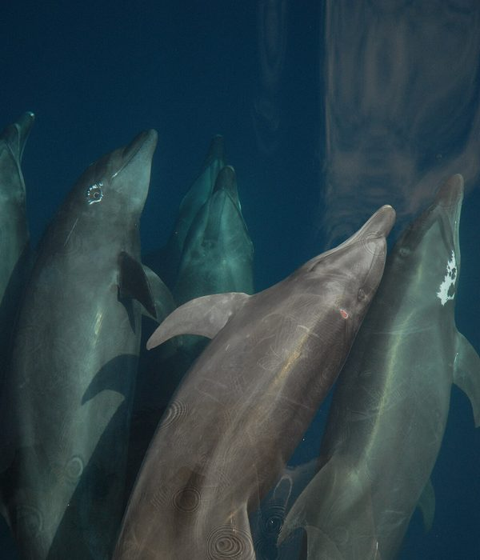
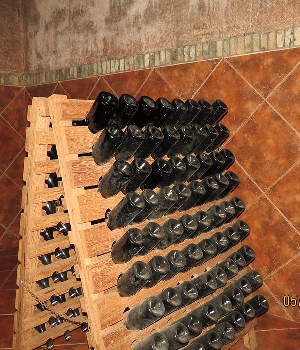
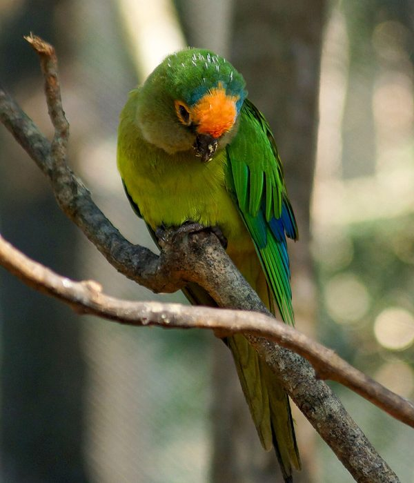
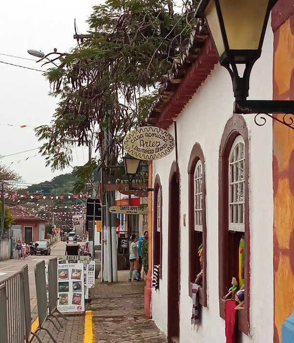
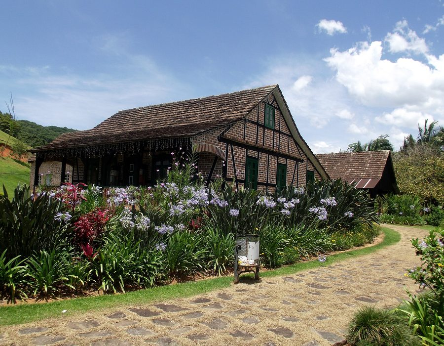

O que quase ninguém sabe sobre Santa Catarina
Recordes de frio, uma república que durou quatro meses, ostras premiadas e um dialeto alemão vivo no interior. Vire os cards para descobrir.
Oito fatos surpreendentes
No computador, passe o mouse. No celular, toque no card. Navegando por teclado, use Tab e Enter.

toque para virar
toque para virar
toque para virar
toque para virar
toque para virar
toque para virar
toque para virarEnxaimel: a casa que se monta como um quebra-cabeça
O enxaimel (do alemão Fachwerk) é uma técnica medieval trazida pelos imigrantes: uma estrutura de madeira encaixada, sem pregos, cujos vãos são preenchidos com tijolos ou barro. As vigas ficam à vista e formam desenhos geométricos na fachada.
Em Blumenau e Pomerode, essas construções deixaram de ser apenas casas e passaram a ser patrimônio. A Rota do Enxaimel, em Pomerode, reúne mais de 30 edificações centenárias ao longo de 16 km — o maior conjunto preservado do Brasil.
- Estrutura aparente: as vigas são o esqueleto da casa, não decoração.
- Preenchimento: tijolo maciço, pedra ou pau a pique, conforme o material disponível.
- Telhado inclinado: herança do clima europeu, útil também nas chuvas do vale.
- Proteção legal: em Pomerode, leis municipais incentivam a preservação e o estilo em obras novas.
Casas com mais de 150 anos ainda habitadas pelas mesmas famílias.

Créditos das fotos
Todas as fotos deste site vêm do Wikimedia Commons e estão sob licenças livres (Creative Commons ou domínio público). As licenças CC BY e CC BY-SA exigem creditar quem fez a foto, e é o que esta lista faz: cada item traz o arquivo usado, o autor e a licença.
-
Praia Central e Barra Norte ao fundo, Balneário Camboriú SC
assets/cidades/balneario-camboriu-praia.jpg — HVL, via Wikimedia Commons (CC BY 4.0).
-
CAIR DA NOITE EM BALNEÁRIO CAMBORIÚ, Santa Catarina, Brasil by Maria de Lourdes Dalcomuni (Ude) - panoramio
assets/cidades/balneario-camboriu.jpg — Nivaldo Cit filho, via Wikimedia Commons (CC BY-SA 3.0).
-
Teleférico do Parque Unipraias com a Estação Barra Sul ao fundo, Balneário Camboriú SC
assets/cidades/bc-teleferico.jpg — HVL, via Wikimedia Commons (CC BY 4.0).
-
Blumenau Brasil
assets/cidades/blumenau-centro.jpg — Marinelson Almeida, via Wikimedia Commons (CC BY 2.0).
-
Ortsblick in Blumenau (Wunstorf) IMG 6621
assets/cidades/blumenau-enxaimel.jpg — losch, via Wikimedia Commons (CC BY-SA 3.0).
-
Relogiodesolcentrohistorico
assets/cidades/blumenau.jpg — Andrevruas, via Wikimedia Commons (CC BY-SA 4.0).
-
UFFS - Campus Chapecó
assets/cidades/chapeco.jpg — Dalton Scavassa, via Wikimedia Commons (CC BY-SA 4.0).
-
Enxaimel Fundos Butzke
assets/cidades/enxaimel-detalhe.jpg — Silvio Klotz, via Wikimedia Commons (CC BY-SA 4.0).
-
Casa Enxaimel. Pomerode - SC - Brasil (7902589328)
assets/cidades/enxaimel-pomerode.jpg — Marinelson Almeida - Traveling through Brazil from Niteroi, Brasil, via Wikimedia Commons (CC BY 2.0).
-
Ponte Hercílio Luz, Florianópolis SC. 02 (cropped)
assets/cidades/florianopolis-ponte.jpg — Adrianoflorianopolis, via Wikimedia Commons (CC BY-SA 4.0).
-
Centro Cultural da Marinha em Santa Catarina (CCMSC)
assets/cidades/florianopolis.jpg — Rômulo Porthos, via Wikimedia Commons (CC BY-SA 4.0).
-
Cidade de luz
assets/cidades/joinville.jpg — Chrisporto, via Wikimedia Commons (CC BY-SA 3.0).
-
Farol Santa Marta Brasil-02
assets/cidades/laguna-farol.jpg — Dieter Heiss from Brasil, Brasil, via Wikimedia Commons (CC BY-SA 2.0).
-
Casario do Centro Histórico de Laguna
assets/cidades/laguna.jpg — Wilson Schuelter, via Wikimedia Commons (CC BY-SA 4.0).
-
Montagem Pomerode
assets/cidades/pomerode-jardim.jpg — Allice Hunter, via Wikimedia Commons (CC BY-SA 4.0).
-
Aratinga aurea - Pomerode Zoo, Santa Catarina, Brazil
assets/cidades/pomerode-placa.jpg — Giro720, via Wikimedia Commons (CC BY 3.0).
-
Casa Enxaimel
assets/cidades/pomerode.jpg — Silvio Klotz, via Wikimedia Commons (CC BY-SA 4.0).
-
Ponte Hercílio Luz um patrimônio catarinense de valor histórico
assets/cidades/ponte-hercilio-luz.jpg — Luluhgomes, via Wikimedia Commons (CC BY-SA 4.0).
-
Escola Municipal Professor Nestor Margarida - Timbó, SC - panoramio
assets/cidades/vale-europeu.jpg — Elias C, via Wikimedia Commons (CC BY 3.0).
-
Blumenau by Totonho Barreto and Kátia C. Oliveira 011
assets/cultura/blumenau-historico.jpg — Ajmcbarreto, via Wikimedia Commons (CC BY-SA 4.0).
-
25 anos da Escola do Teatro Bolshoi no Brasil (54533269480)
assets/cultura/bolshoi.jpg — Agência Senado from Brasilia, Brazil, via Wikimedia Commons (CC BY 2.0).
-
Oktoberfest - A maior festa alemã das Américas - Blumenau – SC - panoramio
assets/cultura/festa-tipica.jpg — W.Feistler, via Wikimedia Commons (CC BY-SA 3.0).
-
Pedra Branca, São José, Santa Catarina, Brasil
assets/cultura/imigracao-alema.jpg — Leonidas Yopan, via Wikimedia Commons (CC BY-SA 3.0).
-
Igreja Matriz - panoramio (9)
assets/cultura/italianos-videira.jpg — matheus.d, via Wikimedia Commons (CC BY 3.0).
-
Fabiane Jambiski
assets/cultura/mata-atlantica.jpg — Fabiane Aparecida Jambiski, via Wikimedia Commons (CC BY-SA 4.0).
-
971110-ILIA-Vanak-IMG 8870-2-2
assets/gastronomia/camarao.jpg — Safa Daneshvar, via Wikimedia Commons (CC BY-SA 4.0).
-
Kołocz śląski
assets/gastronomia/cuca-fatia.jpg — Pustelnik1, via Wikimedia Commons (Public domain).
-
Haselnuss-Streuselkuchen (8523653045)
assets/gastronomia/cuca.jpg — Katrin Gilger, via Wikimedia Commons (CC BY-SA 2.0).
-
Araucaria angustifolia nuts
assets/gastronomia/entrevero.jpg — Mauro Cateb, via Wikimedia Commons (CC BY-SA 4.0).
-
MGSA2018 - Pato
assets/gastronomia/marreco.jpg — MCGau, via Wikimedia Commons (CC BY-SA 4.0).
-
Freshippo steamed oysters with vermicelli and garlic
assets/gastronomia/ostras-bandeja.jpg — Fumikas Sagisavas, via Wikimedia Commons (CC0).
-
Ostra gratinada
assets/gastronomia/ostras-gratinadas.jpg — Rodrigo.Argenton, via Wikimedia Commons (CC BY-SA 3.0).
-
Oysters Rockefeller
assets/gastronomia/ostras-prato.jpg — Dan Perry, via Wikimedia Commons (CC BY 2.0).
-
Pinhão semente
assets/gastronomia/pinhao.jpg — Paulo Marcelo Adamek, via Wikimedia Commons (CC BY-SA 4.0).
-
Prato de Polenta com molho de tomate foto 2
assets/gastronomia/polenta-galeto.jpg — Alex Rio Brazil, via Wikimedia Commons (CC0).
-
Floripa Casario Ribeirao da Ilha SC Brasil06
assets/litoral/acoriano-casario.jpg — SergioRDG, via Wikimedia Commons (CC BY-SA 4.0).
-
Praia Quatro Ilhas Bombinhas
assets/litoral/bombinhas.jpg — Leonardo Pallotta, via Wikimedia Commons (CC BY 2.0).
-
Anim1074 - Flickr - NOAA Photo Library
assets/litoral/boto-laguna.jpg — NOAA Photo Library, via Wikimedia Commons (Public domain).
-
Guarda do Embaú - Palhoça - Santa Catarina
assets/litoral/guarda-do-embau.jpg — Emilio Coatti, via Wikimedia Commons (CC BY-SA 3.0).
-
Dunas da Praia de Joaquina, Florianópolis, SC
assets/litoral/joaquina.jpg — Amanda Likes, via Wikimedia Commons (CC BY-SA 4.0).
-
Barra Norte com o Infinity Coast em destaque vista da Praia Central em dezembro de 2018, Balneário Camboriú SC
assets/litoral/litoral-praia.jpg — HVL, via Wikimedia Commons (CC BY 4.0).
-
Marco do Tratado de Tordesilhas 2
assets/litoral/marco-tordesilhas.jpg — Stanglavine, via Wikimedia Commons (CC BY-SA 4.0).
-
Illawong 1
assets/litoral/ostras-cultivo.jpg — J Bar, via Wikimedia Commons (CC BY 2.5).
-
Praia de Jurerê Internacional (cropped)
assets/litoral/praia-verao.jpg — Rafael Bernardino Mattei, via Wikimedia Commons (CC BY-SA 3.0).
-
Santo Antônio de Lisboa - Florianópolis - 20220909150752
assets/litoral/praias-aereo.jpg — Agnaldo Servo, via Wikimedia Commons (CC BY-SA 4.0).
-
Praia da Lagoinha do Leste, Florianópolis
assets/litoral/trilha-praia.jpg — Papa Pic, via Wikimedia Commons (CC0).
-
Campos Novos Araucária
assets/serra/araucarias-campo.jpg — Deyvid Setti e Eloy Olindo Setti, via Wikimedia Commons (CC BY-SA 3.0).
-
Floresta Nacional de Caçador SC - Araucárias 3
assets/serra/araucarias-geada.jpg — Helena Chiarello, via Wikimedia Commons (CC BY-SA 3.0).
-
Pedra-furada-vista-morro-da-igreja
assets/serra/morro-da-igreja.jpg — Rodrigo Américo Jorge, via Wikimedia Commons (Public domain).
-
Cambirela, morro, neve, vista do morro da cruz - Daniel Queiroz - 23julho2013-IMG 6746
assets/serra/neve-serra.jpg — Daniel Queiroz, via Wikimedia Commons (CC BY-SA 3.0).
-
A contemplação na Serra do Rio do Rastro
assets/serra/rio-do-rastro.jpg — Ro Pimentel, via Wikimedia Commons (CC BY-SA 3.0).
-
RenatoSoares Igreja Matriz São Joaquim SC (39339467010)
assets/serra/sao-joaquim.jpg — MTur Destinos, via Wikimedia Commons (Public domain).
-
Serra do Rio do Rastro, Santa Catarina, Brasil
assets/serra/serra-estrada.jpg — Paulo Hopper, via Wikimedia Commons (CC BY-SA 4.0).
-
Reserva Particular do Patrimônio Natural Papagaio-de-Altitude - Liu Idárraga Orozco (01)
assets/serra/serra-geada.jpg — Liu Idárraga Orozco, via Wikimedia Commons (CC BY-SA 4.0).
-
MORRO DA IGREJA, NA SERRA DO CORVO BRANCO EM URUBICI-SC, BRAZIL 02
assets/serra/serra-inverno.jpg — EDI GALVANI ULIANO, via Wikimedia Commons (CC BY-SA 4.0).
-
MORRO DA IGREJA, NA SERRA DO CORVO BRANCO EM URUBICI-SC, BRAZIL 01
assets/serra/urubici.jpg — EDI GALVANI ULIANO, via Wikimedia Commons (CC BY-SA 4.0).
-
Neve na SC-438 em São Joaquim
assets/serra/urupema-neve.jpg — Arthur Puls, via Wikimedia Commons (CC BY-SA 3.0).
-
Vinhedos da Serra Catarinense 05
assets/serra/vinho-altitude.jpg — Elaine Alessio, via Wikimedia Commons (CC BY-SA 4.0).